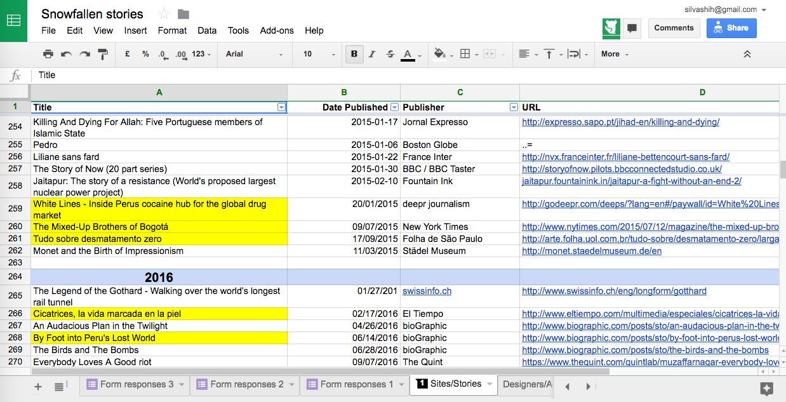
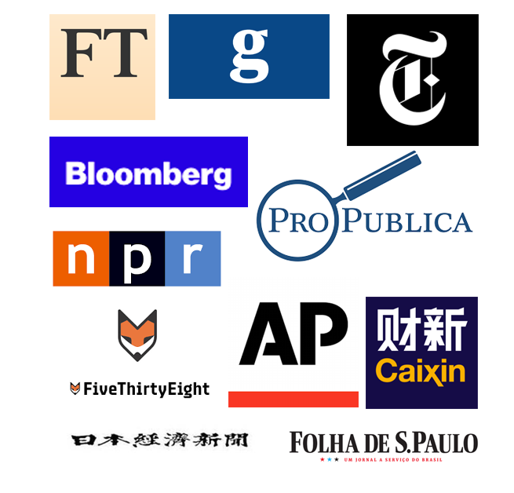

Hacks/Hackers Taipei聯合創辦人
史書華 silvashih[at]gmail[dot]com
鼓勵記者編輯（Hacks）和程式設計師（Hackers）相互學習、合作，一起想像新聞未來的跨國非營利新聞社群。
「想太多」的前紐約時報編輯 Joe Sexton

"We moved forward on parallel tracks,
exchanging files and reviewing progress together."
「我們在各自的崗位上平行前進，但會彼此交換檔案、
一起檢查進度。」
Steve Duenes, NYT's graphic editor.
"...we went into the prototyping phase and collaborated on how best to integrate the graphics and video into the narrative experience. There was a lot of trial and error and experimenting."
「...我們很快就進入prototype階段，想著有什麼方式能把圖像、影音整合進敘事。過程中有大量的試驗和錯誤、以及實驗機會。」
Jacky Myint, NYT's multimedia producer/designer.
① 製作過程打破編輯台編制，從流水線生產
（區分前後製），到團隊平行合作。
② 新聞報導導入科技產品的設計過程。
③ 從專輯設計之初，就開始思考該如何衡量影響力。
一直到今天全球各地還有大量的"Snowfall-ish"追隨者
前端工程師╱記者、資料視覺化╱記者、數據調查╱記者、VR╱記者（或通稱互動記者 interactive journalist）

|

|

|

|

|

|

|

|
"Even new readers who don't buy the newspaper have told us they visit our Web site because of our digital creativity."
「就算讀者不買我們的報紙，但讀者會因為我們在數位上的創意呈現、而造訪我們的網站。」
Julius Tröger, head of interactive team with Berliner Morgenpost.
① 製作過程的效益能外溢到整個編輯部，帶動數位轉型。
內部開始出現各種數位敘事工具，適合一般記者上手、一般文章使用。編輯室也開始出現專屬的 digital training team。
② 出現專門或跨部門臨時組建的團隊，能固定產出。也因此帶動新聞組織投入研發，學習運用前沿科技說故事。（建立內容差異化）
（國外月亮沒有比較圓）
追求創新的挑戰：
如果不放入CMS，未來會有系統維護和內容存取的問題。
追求創新的挑戰：
追求創新的挑戰：
提數位製作之前，先回答以下問題：
① 報導的新聞價值在哪？
② 在技術上有哪些創新嘗試
③ 提供哪些讀者或廣告價值？
④ 你需要哪些跨部門的幫忙？
⑤ 你需要文字記者的協助嗎？
努力每月都辦聚會、講座、黑客松等活動。
努力每周都整理一篇科技x新聞的大小事。 （往期連結）